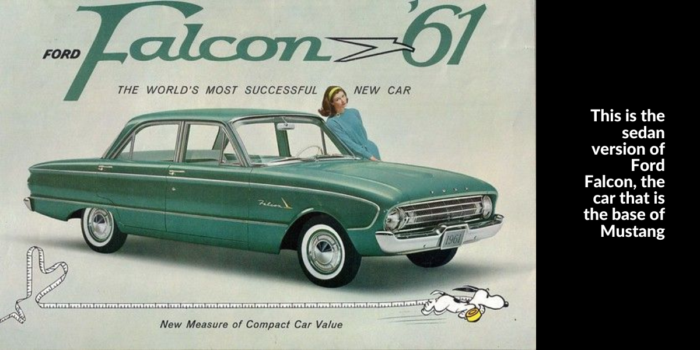
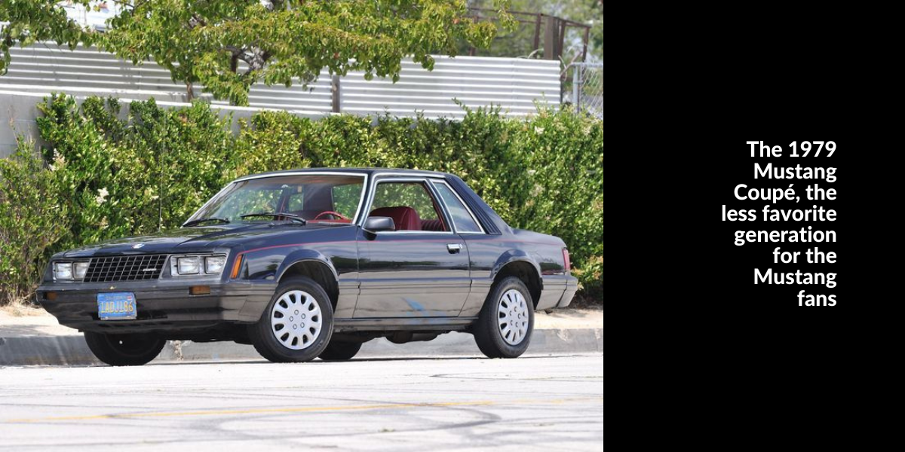

The history of Mustang
In the 50's, Ford was focused on releasing a compact car, like other cars of the competitors, and then Falcon was released in 1959. A smaller car than others of the same age, Falcon was released with so many options of bodywork (sedan, pickup, wagon, coupé, and others), engine (from 2.8 with six cylinders to V8 4.7, with 289 cubic inches), between other options. In the first year of sales, Falcon had 430 thousand of unities sold. It was in production from the year of the releasement, 1959, to 1970, ending the production in the EUA, but in other countries, like Australia, Argentina and Brazil, Falcon had a longer life, being sold until the decade of 90's in Argentina for example.
Inspired by the Falcon's mechanics, Ford created Mustang, with the idea of being a personal car, to young people, and to attend the exigencies of the owner. Lee Iacocca was the person responsible for creating Mustang and convincing Henry Ford II to release this amazing car. The target audience to this car was the “baby boomers”, a generation of people who was born after the Second World War. Mustang started to be developed in the year of 1961, and almost was called Cougar, Monaco, Monte Carlo or Torino, but Lee Iacocca preferred to call this car Mustang, because of the wild type of horses from the EUA, which can run at any direction it wants, like the idea of the car.
On April 17th, 1964, the first generation of Mustang was released at the New York World's Fair, by Lee Iacocca. In the first sales, Mustang broke records with 418.812 unities sold. With this success, Iacocca was promoted and started to help Ford to release other cars. In the first day, 22 thousand of requests were made to buy the new Mustang, which had so many optional configurations, like 2 types of bodywork, 4 types of engine and numerous other things to personalize the car. Months later, a new option of bodywork was released, the fastback, a more sportive type than the coupe and the convertible. The remodulation of the first generation was released in 1971, with a larger and heavier body, but wasn't the car that the people wanted, and the sales were less than Ford expected. Some memorable models were released in this generation, like the Mach 1, Sprint and Boss 351, but they weren't enough to turn this generation so iconic.

The second generation was released in August of 1973, to attend the petroleum crisis, but wasn't the same car, losing the V8 engine, which is the most important part of a Mustang. However, this generation was perfect for that moment, when petrol was quadruplicating the price. Another fact is that the platform used to build this Mustang generation was the same as the Ford Pinto.

The third generation was released in 1979, to the 80's, and returned with the V8 engine. Another change about the engine was the engine 2.3 with turbocharger, which was faster than the V8, what impressed the most traditional Mustang fans. One thing that is disappointing about this generation is the fact that the Mustang logo wasn't in front of the car like the others, but it also lasted 14 years, from 1979 to 1993 in production. In all these years, Ford made just small changes in Mustang, what annoyed the Mustang fans that wanted a new generation.
The fourth generation, released in 1994, returned with the Mustang logo in front of the car, and with the Mustang's spirit. It came with 2 options of bodywork (coupé and convertible), 2 types of engines (V6 3.8 with 145hp and V8 4.9 with 215hp) and ABS breaks. In the year 1999, Ford released changes to Mustang, in contrast to GM, that announced the end of Camaro production in 2002. This generation had some iconic models back to production, like the Mustang Mach1, or the Mustang Bullitt, making reference to the movie Bullitt, released in 1968.

The fifth generation came in 2005, with a different design, to remmember the 1965 Mustang generation, and to celebrate the Mustang's fourty aniversary since it's releasement. The new generation came with 2 options of engines (a V6 4.0 with 204hp and a V8 4.6 with 304hp), and also with good news: Carroll Shelby came back to make wonderful cars with Ford and SVT, like the Mustang Shelby GT 500, with a V8 5.4 engine, that can gave 500hp to this amazing car, and Brembo breaks in front wheels. Another amazing car made by Shelby and Ford was the 2007 Shelby GT 500 KR (King of the Road), with a V8 5.4 engine, with 547hp, 70,5m.kgf, and carbon fiber hood. Another important thing about this generation is that the most famous Mustang rivais in the sportive car industry, the muscle cars Camaro and Challeger came back to production in 2008, what was a great challenge for Mustang, because for long years Ford didn't have to pay attention in other cars to be better then them, but now Mustang had to be the better as it can be.

The sixth generation was released in 2014, 10 years after the last generation, and came for the first time to Brazil, imported by Ford. The main engine of this generationis the V8 5.0, that became a classic, with 442hp. This mustang was the first to have a electronical panel and a better traction control, what is better for the curves. The options for engines were the Ecoboost 2.3 with 316hp and the iconic V8 5.0. The first version of this Mustang with the name Shelby came in November: the GT 350, which had a V8 5.2, with 533hp. The last version released in this generation was the Mustang Coupe Oxford White Premium, with a Ecoboost 2.3 engine, in 2023.